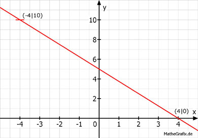

Lineare Funktionen Aufgabe 48 Ergänzen Sie die Wertetabellen für die Graphen der Funktionen: 0,25x + 0,2y - 1 = 0 0,25x + 0,2y - 1 = 0 | +1 0,25x + 0,2y = 1 | -0,25x 0,2y = 1 - 0,25x | :0,2 y = 5 - 1,25x x -4 4 y 10 0 y(-4) = 5 - 1,25 * (-4) = 5 + 5 = 10 y(4) = 5 - 1,25 * 4 = 5 - 5 = 0 